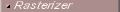

|
|
This page describes the features of the SVG Rasterizer utility that
comes with the Batik distribution. It discusses the following:
The SVG Rasterizer is a utility that can convert SVG files to a
raster format. The tool can convert individual files or sets of
files, making it easy to convert entire directories of SVG
files. The provided formats are JPEG, PNG, and Tiff, however the
design allows new formats to be added easily.
|
 |  |  | | Downloading the rasterizer | |  | |  |
| | | | Rasterizing one or several SVG files | | | | |
|
The method for starting the rasterizer depends on the distribution of Batik
that you chose to download. The following describes how to start the viewer
for each distribution.
| | | | Using the binary distribution | | | | |
|
If you downloaded the binary distribution of Batik, you should have
gotten a file called batik-1.5beta4.zip, and, after expanding that
file, a JAR (Java ARchive) file called batik-rasterizer.jar.
To start the rasterizer, open a console, go to the directory where you
expanded the distribution (and where batik-rasterizer.jar is located) and
simply type the following at the command prompt :
java -jar batik-rasterizer.jar [@files]
For example, if you type:
java -jar batik-rasterizer.jar samples/batikFX.svg
you will see the following printout:
Converting file: samples/BatikFX.svg to samples/BatikFX.png
Once the conversion is complete, you will find a batikFX.png file in the samples
directory
You can pass options to the command line:
java -jar batik-rasterizer.jar [options] [@files]
Where the options are:
-d <dir|file>. Output directory. If there is a single input file, this can be a file.-m <mimeType>. Output mime type, one of image/png, image/jpeg, application/pdf, image/tiff.-w <width>. Output width. This is a floating point value.-h <height>. Output height. This is a floating point value.-maxw <width>. Maximum output width. This is a floating point value.-maxh <height>. Maximum output height. This is a floating point value.-a <area>. Output area. The format for <area> is x,y,w,h, where x, y, w and h
are floating point values.-bg <color>. Uuput color. The format for <color> is a.r.g.b, where a, r, g and b
are integer values.-cssMedia <media>.CSS media type for which the source SVG files should be
converted.-cssAlternate <alternate>. CSS alternate stylesheet to use when converting the source
SVG files.-cssUser<userStylesheet>. CSS user stylesheet URI to apply to converted SVG documents
in addition to any other referened or embeded stylesheets.-lang <userLanguage>. User language to use when converting SVG documents.-q <quality>. Quality for the output image. This is only relevant for the
image/jpeg mime type.-dpi <resolution>. Resolution for the ouptut image.-validate Controls whether the source SVG files should be validated.-onload Controls if the source SVG files must be rasterize after dispatching the 'onload' event.-scriptSecurityOff Removes any security check on the scripts running as a result of dispatching the onload event.-scripts<listOfAllowedScripts> List of script types (i.e., values for the type attribute in the <script> tag) which should be loaded.
For example:
java -jar batik-rasterizer.jar -d myDir -m image/jpeg samples/*.svg will generate JPEG images
for all the SVG files found in the samples directory.
NOTE: to run MIME type application/pdf need to have (see FOP) installed.
|
|
|
Rasterizer task is an
Ant
version of the rasterizer utility. It fulfills the same basic
purpose as the utility but has a different syntax and a
little different set of features.
The task is able to produce four raster formats: PNG, JPEG, Tiff
and PDF. You need to have
FOP installed (versions after
0.20.2 should work) in your CLASSPATH if you want to
produce result images in PDF format.
| | | | Taking rasterizer task in use | | | | |
| Attribute
|
Description
|
Required
|
| result
|
Sets the type of the result image. Only one the
following values are allowed: image/png,
image/jpeg, image/tiff or
application/pdf. The value have to be in
lowercase letters.
|
Yes
|
| height
|
Sets the height of the result image in pixels. Task
calculates the height from the SVG file if this
parameter has not been set. The rasterizer keeps the
aspect ratio of the SVG file even if the both
height and width has been set.
|
No
|
| width
|
Sets the width of the result image in pixels. Task
calculates the width from the SVG file if this
parameter has not been set. The rasterizer keeps the
aspect ratio of the SVG file even if the both
height and width has been set.
|
No
|
| maxheight
|
Sets the maximum height of the result image in pixels.
The image won't be higher than defined in this parameter,
regardless of the size set in the image itself or in other parameters.
This is a floating point value.
|
No
|
| maxwidth
|
Sets the maximum width of the result image in pixels.
The image won't be wider than defined in this parameter,
regardless of the size set in the image itself or in other parameters.
This is a floating point value.
|
No
|
| quality
|
Sets the quality of the produced image. The value
have to be greater than 0 but smaller than 1. A bigger
number means better quality. Quality value is used
only with JPEG images.
The default quality value is 0.99.
|
No
|
| area
|
Defines the area in the SVG file which will be
rasterized. Parts outside this area are discarded and
don't show in the result image. The area attribute value
has four integers separated with commas.
The first two integers set the x and y coordinates of
the upper left corner of the area, respectively. The
last two integers set the width and height of the area,
respectively. For example,
"10, 20, 100, 200" sets the
rectangular area from point 10,10 to point 110, 220.
The specified area is applied to all images if more
than one file is rasterized during one task.
|
No
|
| bg
|
Sets the background color of the result image.
The bg attribute value is either three
or four integers separated with commas.
The four values are alpha channel, red,
green, and blue, respectively. If only three values
are given, then the values are red, green, and blue and
the alpha channel is automatically set to 255 (opaque).
All values have to between 0 and 255.
The default value is none which means that background
is transparent and not filled with any color.
|
No
|
| media
|
CSS media type which is used to select CSS
stylesheet. The selected stylesheet is then used to
rasterize the SVG files. Only visual media group is
supported (see
CSS2 specification
for more information about media groups).
The default value is screen.
|
No
|
| dpi
|
Resolution for the result image. The attribute
value is used to compute the "pixel to millimeter"
ratio used when processing SVG files.
The default value is 96.
|
No
|
| lang
|
Language which is used select language specific
areas from the SVG file during the rasterizing
process. The valid values are defined in RFC3066.
The default value is en.
|
No
|
| src
|
Name of a one input file. Use this parameter to
convert just one file which name and location are known.
dest parameter have to be set, too.
|
One of the following is required: src
attribute, srcdir attribute or
fileset element(s).
|
| dest
|
Name of a one output file. Use this with
src parameter only. Output directory is
created if it doesn't exist.
|
Required if src is used.
|
| srcdir
|
Name of the input directory. srcdir and
fileset elements can be combined and
srcdir can be left out if there are at
least one fileset child element.
srcdir file selection can be controlled
with include, exclude, etc.
child elements. Note that without control parameters
the task tries to rasterize all files in
the given directory.
|
One of the following is required: src
attribute, srcdir attribute or
fileset element(s).
|
| destdir
|
Name of an output directory. Use this with
srcdir parameter or fileset
elements. The task generates the names of the output
images by changing the suffix of the input file names to
correspond the result image type. A suffix is added if
the input file doesn't have one. Output directories are
created if they don't exist.
|
Required if srcdir attribute or
fileset elements are used.
|
| classname
|
Classname of the XML parser used to parse SVG images.
The value can be either complete classname with package
information included or jaxp,
which means any available parser in the CLASSPATH
that supports JAXP. See the Batik code for the default value.
|
No
|
You can use fileset elements to select input
files and directories. See the Ant
documentation to learn how to use
filesets.
|
| | | | Examples of using the rasterizer task | | | | |
|
|
|